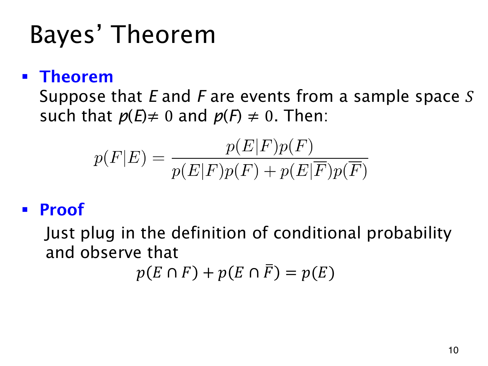

L1.10 · 第 10 页讲解原文
查看这一页课件

Bayes 定理怎样反推来源
令 F 为一个假设或来源，E 为观察到的证据。按条件概率定义，
p(F∣E)=p(E)p(E∩F).
分子是“来自 F 且产生证据”的概率。分母包含“无论来自哪一类，产生证据”的所有情况；把 E 分成互斥的 E∩F 和 E∩F，便有
p(E)=p(E∣F)p(F)+p(E∣F)p(F).
分子也用乘法公式展开，代回得到 Bayes 定理：
p(F∣E)=p(E∣F)p(F)+p(E∣F)p(F)p(E∣F)p(F).
p(F) 是先验概率，p(E∣F) 是似然（likelihood），p(F∣E) 是后验概率（posterior）。检测例中，醉酒是 F、阳性是 E；95% 是似然，低先验仍可能使后验远低于 95%。推导没有假设独立，独立时证据反而不会更新 F 的概率。
使用时须有 p(E)>0，展开的两类条件概率也要有定义。课件只要求 p(F)=0，但若 p(F)=0，补类的条件项便未定义，应回到交集形式计算，不能机械代入展开式。